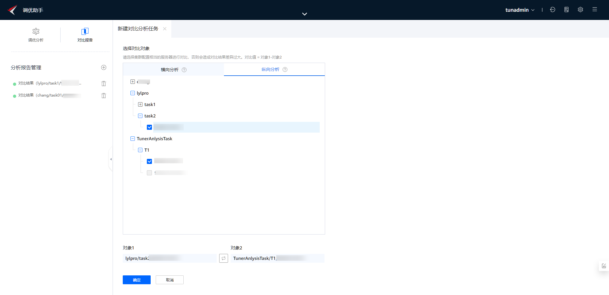
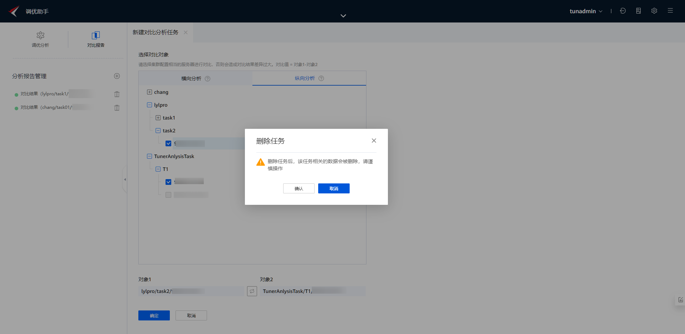

前提条件
- 已在“普通分析”成功创建工程，且当前工程下不存在“离线”状态的节点。
- 所有用户都只能在自建的工程下新建分析任务。
操作步骤
- 单击“分析报告管理”后的
 。
。新建对比分析任务，系统提供两种分析方式，如表1所示。
- （可选）新建对比分析任务，选择横向分析方式。
- 单击选中同一工程统一任务下的不同节点。单击
 ，可对对象1和对象2的位置进行调换。图1 新建横向对比分析任务
，可对对象1和对象2的位置进行调换。图1 新建横向对比分析任务
- 单击确认，横向对比分析任务创建完成。
- 单击选中同一工程统一任务下的不同节点。单击
- （可选）新建对比分析任务，选择纵向分析方式。
- 单击选中不同任务下的两个节点。单击
 ，可对对象1和对象2的位置进行调换。图2 新建纵向对比分析任务
，可对对象1和对象2的位置进行调换。图2 新建纵向对比分析任务
 - 单击确认，纵向对比分析任务创建完成。
- 单击选中不同任务下的两个节点。单击
- （可选）删除历史报告。

删除历史报告后，该历史报告的分析数据将无法恢复，请谨慎操作。
- 选中左侧分析报告管理下的历史报告。单击选中历史报告右侧的
 。图3 删除历史报告
。图3 删除历史报告
 - 单击确认，删除该历史报告。
- 选中左侧分析报告管理下的历史报告。单击选中历史报告右侧的